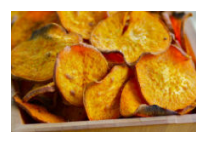

Share your Foor Sence
Submit yout favorite recipes, become a contributor, or get interviewed.
Tastemakers
Feast your eyes & get reciepes!
Blog
News, how-tos, stories, and more
The A-List
Handpicked, absolute favorites
Contribute
We want to hear from you!

2012's Best Summer CookBooks
With the best of the season coming from “orchards, farms and
gardens,” NPR has put together an impressive collection of 10
summer cookbooks.
May 23, 2012 /
Read

How to Make Vegetable Chips
About a month ago, I ate almost an entire box of kale chips.
My brother and I were visiting our cousin in Brooklyn, and
before a very thoughtfully prepared vagan...
May 23, 2012 /
Read


Recipes from a Sunday Supper
With the best of the season coming from “orchards, farms and
gardens,” NPR has put together an impressive collection of 10
summer cookbooks.
May 23, 2012 /
Read